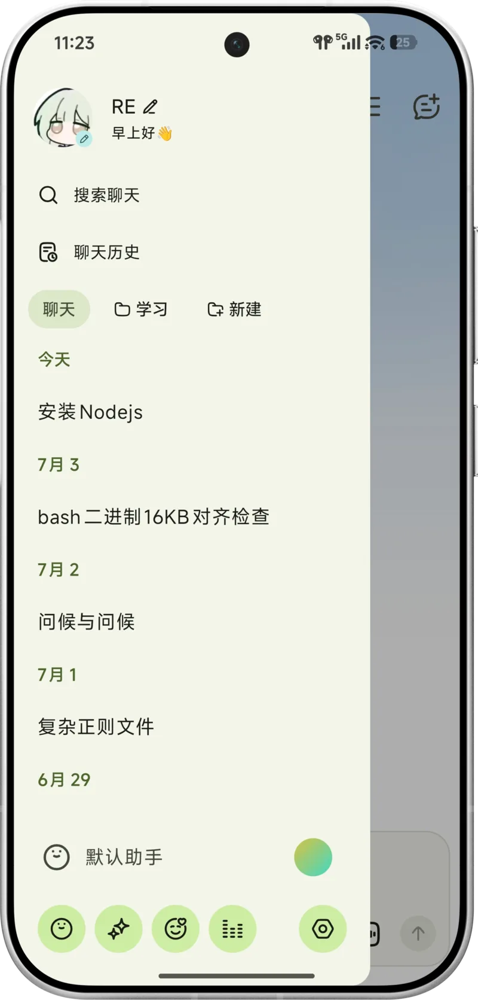

为什么模型总认错自己？——RikkaHub背后的自由权哲学
大语言模型没有自我认知，但RikkaHub并不急于给它硬塞一个身份。这篇文章从助手机制、提示词注入到语音链路，拆解它"让用户拥有控制权"这句话背后的技术取舍。
一个让人困惑的现象
很多人第一次接触 rikkahub官网 都会撞到同一件事：你明明选了 Claude Sonnet，问它"你是什么模型"，它却自信满满地回答自己是 GPT-4o。第一反应是"这 bug 修不修"？
但如果我告诉你，这不是 bug，而是大语言模型的基本属性——它们根本不知道自己是什么——你会怎么想？RikkaHub 的开发者选择不在默认提示词里硬编码"我是 XXX 模型"的身份说明，把这件事留给了用户自己。这个决定看似微不足道，实际上贯穿了整个产品的设计哲学：不让平台替你决定 AI 应该是谁。
助手不是模型，是"驾驶模式"
理解 RikkaHub 的核心设计，必须先搞清楚一个区分：模型和助手是两层东西。模型是引擎——GPT-4o 引擎、Claude Sonnet 引擎，它只管"怎么推理"。助手是驾驶模式——一套打包好的配置，包含系统提示词、选用的模型（也可以留空跟随全局）、生成参数（temperature、max tokens）、可用的工具（MCP、技能）、记忆池，甚至外观和标签。
为什么要拆成两层？因为同一个引擎可以跑在完全不同的任务里。编程模式助手需要严谨的代码风格指导和低 temperature，创意写作助手需要 creative writing 风格提示词和高 temperature，翻译助手需要固定的术语表。你可以在对话中途点击顶部的助手名称，把"默认助手"一键切换成"编程助手"——之后所有新消息立刻使用新助手的全套配置，但已经生成的消息保持原样不被改写，同时新助手能看到完整的对话历史。这是一个很克制的设计：切换只影响未来，不重写过去。

提示词注入：控制权是怎么落地的
让模型"知道自己是谁"，RikkaHub 靠的不是硬编码，而是占位符变量。你在助手的系统提示词里写 {{model_name}}，发送时会自动替换成当前模型的真实名称；写 {{cur_datetime}}，会注入当前时间；写 {{nickname}} 和 {{device_info}}，可以让模型知道你是谁、用什么设备。
这套机制的妙处在于：它把"身份定义"变成了一个可以自由编排的文本模板，而不是一段不可修改的平台指令。有人想让模型假装成编程导师，有人想让它扮演翻译官，有人想导入 SillyTavern 角色卡做角色扮演——如果 RikkaHub 在底层硬塞了"我是 XXX 模型"的身份说明，反而会和用户的自定义提示词冲突，让角色扮演类助手出现穿帮。
一个常见的身份模板长这样：
你运行在 RikkaHub 上，当前模型：{{model_name}}。
当前日期时间：{{cur_datetime}}。
用户：{{nickname}}（{{device_info}}，{{system_version}}）。注意第二行——时间注入同样重要。模型的训练数据截止日期是固定的，它对"今天几号"天然没有感知。如果你不告诉它当前时间，它可能会回答一个幻觉中的日期。占位符机制把时间、身份、设备信息都变成了运行时可注入的变量，这比写死在提示词里灵活得多。
语音链路：从 ASR 到 TTS 的全流程拆解
RikkaHub 的语音交互是另一个值得拆解的模块。整个链路是：按住麦克风 → ASR 实时转录 → 文本填入输入框 → 模型生成回复 → TTS 朗读回复 → 下一轮 ASR。这中间有几个关键决策点。
第一个决策是 ASR 提供商的选择。RikkaHub 支持 OpenAI realtime（WebSocket 低延迟）、阿里云 DashScope 的 qwen3-asr-flash-realtime（中文优化）、字节跳动火山引擎的 SeedASR（普通话和多口音表现好）。为什么要支持这么多提供商？因为不同场景的瓶颈不一样：海外用户可能偏好 OpenAI，国内用户对中文识别的精度更敏感。多提供商不是堆功能，是让用户选对自己网络环境和语言需求的那一个。
第二个决策是 VAD（语音活动检测）阈值。这个参数控制的是"什么时候判定有人在说话、什么时候判定是静音"。阈值低（0.1~0.3）会积极捕捉声音，安静环境、轻声说话时好用；阈值高（0.7~1.0）只对明显声音触发，嘈杂环境下更稳。默认值 0.5 是个折中，但 RikkaHub 把这个参数暴露给用户调——这又是"控制权"的体现。
第三个决策是 实时 vs 批量。OpenAI realtime 和 DashScope flash-realtime 都是流式方案，转录结果边说边出现在输入框里，体验接近实时对话。传统 REST API 方案要等整段说完才返回，体验差距明显。RikkaHub 优先支持流式提供商，但也保留了传统端点的兼容性——有些场景下用户可能就是需要批量转录的能力。
图片生成：为什么独立成工作区而不是塞进聊天
你从下载拿一个客户端装上就能发现，RikkaHub 有两种生成图片的方式：一种是主屏幕应用抽屉里的独立图片生成界面，直接调用 DALL-E 3 或 Imagen 这类图片模型；另一种是在 Agent 工作区里，AI 用 Python 脚本（PIL、matplotlib、diffusers 等）生成。两种方式互补，但独立工作区的设计透露出一个产品判断：高质量创意图片和聊天是两种不同的任务流。
聊天的核心是对话——一问一答、上下文连续、模型和你互动。图片生成的核心是迭代——先写提示词出一张、改几个词再出、满意了再批量生成、还要翻相册找旧图复用。把图片生成塞进聊天窗口，会让两种流程互相干扰：你在翻相册时会被新消息打断，在聊天时想生成图又要切来切去。独立工作区给了图片生成一个完整的空间：生成标签页写提示词、调模型、选宽高比（正方形适合社交媒体、横向 16:9 适合桌面壁纸、纵向 9:16 适合手机壁纸）；相册标签页集中保存所有历史生成图，支持一键复制提示词复用、导出到设备相册。
这套设计的代价与边界
说了这么多优点，这套"让用户拥有完全控制权"的设计也有它的代价。
第一个代价是学习曲线。默认提示词里没有身份指令是有意为之，但对新用户来说，"模型说自己是 GPT-4o"会被当成 bug 而不是设计。文档需要花篇幅解释大模型的基本原理，而不是藏起来让用户自己悟。RikkaHub 在 rikkahub文档 的 FAQ 里专门写了"模型不知道自己是什么"这一节，用一张表格把"是什么"翻译成"为什么这样设计"，这是一种诚实但陡峭的沟通方式。
第二个代价是配置碎片化。助手、模型、ASR 提供商、图片模型，每个都能单独配置，而且助手还能按对话覆盖系统提示词。灵活性很高，但也意味着用户容易陷入"调配置半小时、实际使用五分钟"的泥潭。RikkaHub 用"复制助手快速创建类似配置"、"标签分组筛选"、"定期清理不用的助手"这些小贴士来缓解，但碎片化本身是灵活性的必然代价。
第三个代价是依赖提供商。ASR、图片生成、推理模型——这些能力没有一个是 RikkaHub 自己提供的。它只是一个统一的客户端，把不同提供商的 API 整合进来。如果某个提供商涨价、限流或下线，用户的体验会直接受影响。RikkaHub 的应对策略是多提供商支持——你可以从 OpenAI 切到 DashScope，从 DALL-E 切到 Imagen，但这本质上是在转嫁风险而不是消除风险。
适合什么、不适合什么
那 RikkaHub 到底适合谁？
如果你在意的是"让 AI 听你的而不是听平台的"——想给模型写一套独特的身份、想导入角色卡做角色扮演、想精细调控每个场景的提示词和参数——RikkaHub 这套"助手打包 + 占位符注入 + 多提供商"的设计就是为你做的。它把 AI 自由权从一句口号变成了一套可以操作的机制。
但如果你想要的是"开箱即用的完整产品体验"——一个已经帮你调好了所有设置的万能助手，按一下就好用——RikkaHub 可能反而显得麻烦。默认提示词里没有身份指令、默认模型可能不是你最常用的那个、ASR 还要自己配提供商——这些"留给用户决定"的设计，对不想折腾的人来说反而是负担。
说到底，RikkaHub 的设计哲学和它的助手切换机制如出一辙：它不替你决定模型应该是谁，也不替你决定你应该用什么。它提供的是一套脚手架，让你自己搭出想要的 AI 形态。这套脚手架的上限很高，但下限也低——能搭多好，取决于你愿意投入多少。
我把这套脚手架的文档、配置参考和案例同步在了三个仓库，方便不同网络环境下的读者查阅——海外读者直接翻 GitHub 就行，国内网络不稳的时候 Gitee 是个靠谱替代，GitCode 留作额外备份以防万一。